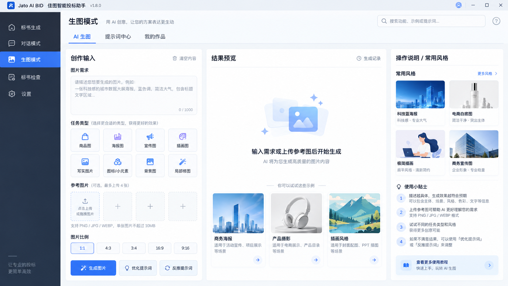
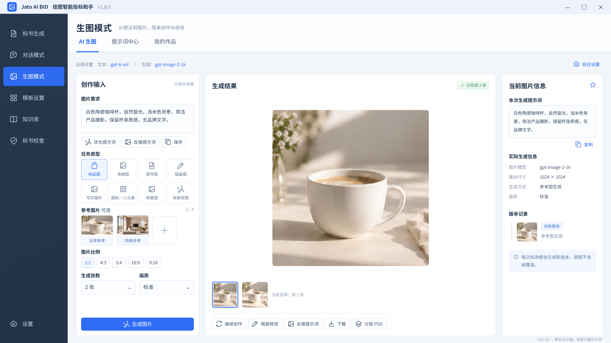
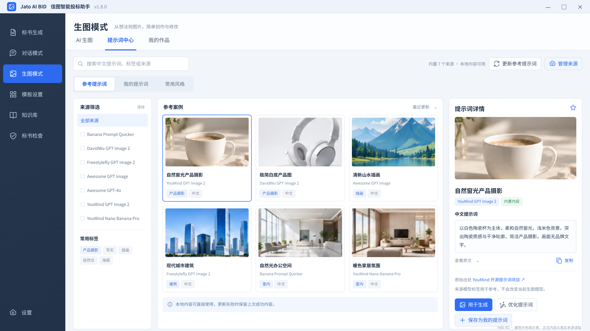
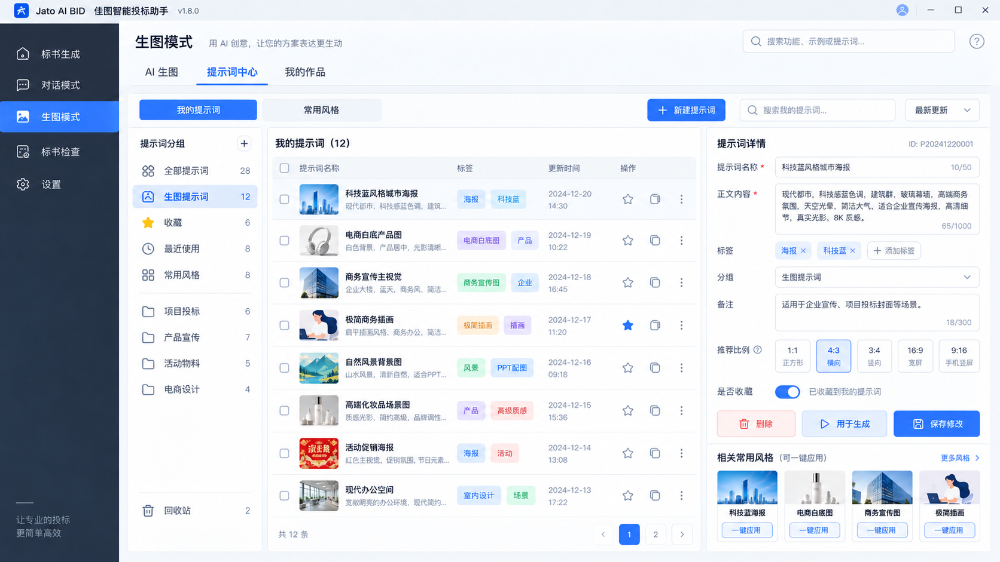
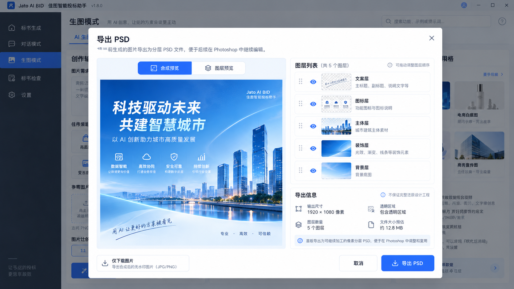

以 Spec 的业务规则、UI Handoff 的交互／勘误及本页图稿共同实施。点击图像可查看原尺寸；静态 HTML 仅用于排版参考。
H01｜AI 生图：初始状态
已认可设计参考；示例文案按 R3 Handoff 勘误，非运行截图。

H02-R2｜AI 生图：参考图与生成结果
已认可设计参考；示例文案按 R3 Handoff 勘误，非运行截图。

H06-R2｜参考提示词中心
已认可设计参考；示例文案按 R3 Handoff 勘误，非运行截图。

H07｜我的提示词与常用风格
已认可设计参考；示例文案按 R3 Handoff 勘误，非运行截图。

H09｜图层检查与 PSD 导出
已认可设计参考；示例文案按 R3 Handoff 勘误，非运行截图。
